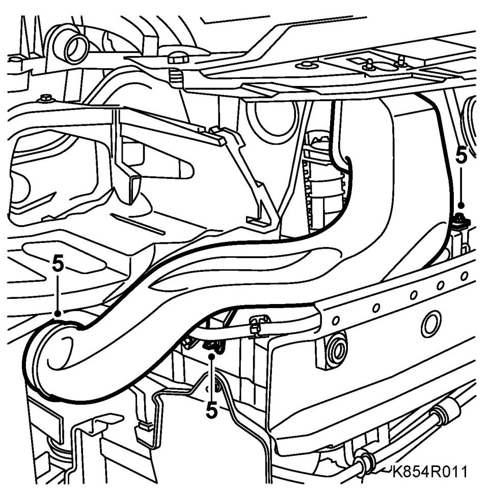
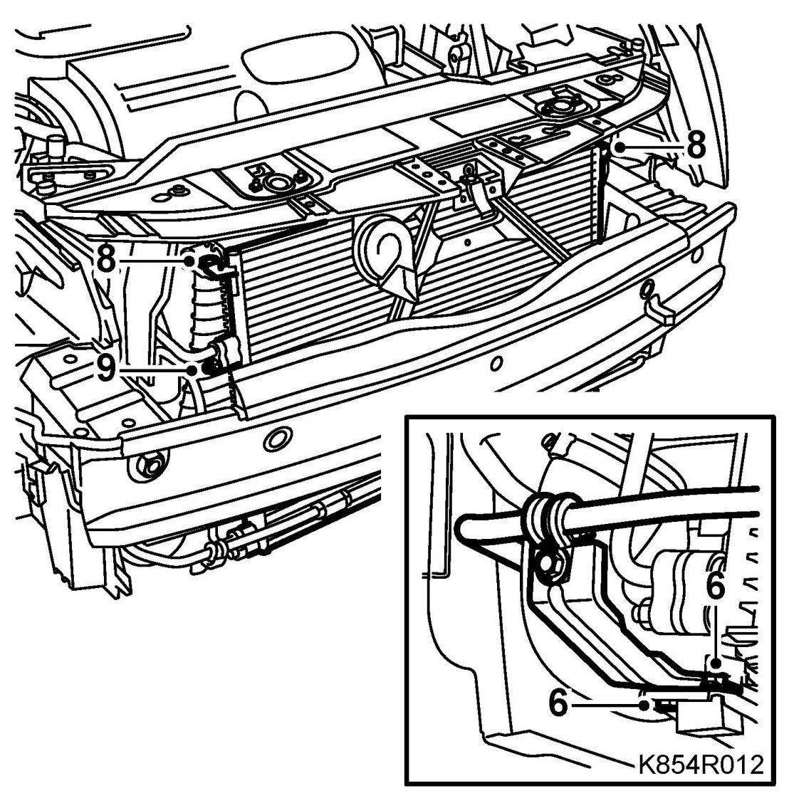
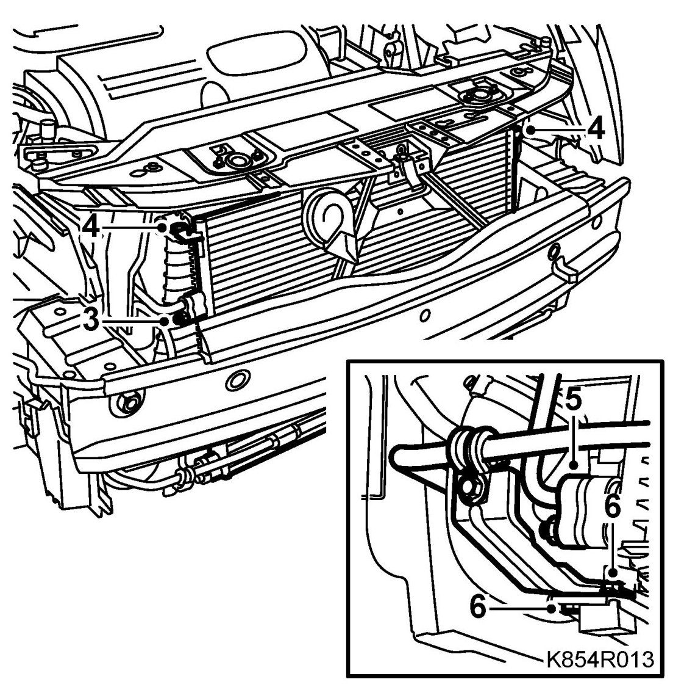
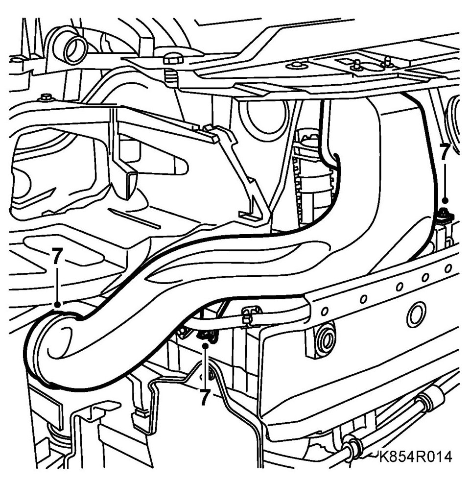

Condenser, B207
Condenser, B207
IMPORTANT: The A/C receiver and the compressor oil absorb moisture from the air, which can then not be removed. Plug all connections that are opened immediately.
To remove
1. Put the car on a lift.
2. Drain the refrigerant from the A/C system.
3. Remove the front bumper shell.
4. Dismantle the right headlamp.
5. Remove the air intake.

6. Remove the right mounting of the servo pipe.

7. Remove the nuts of the PAD connections.
8. Dismantle the condenser's upper screws.
9. Lift up the condenser from the lower support. At the same time, pull the PAD connections out of the condenser. Plug the openings.
10. Carefully lower and remove the condenser.
To fit
1. Adjust the oil quantity in the A/C system.
2. Fit new seals on the PAD connections.
3. Raise the condenser into position. At the same time, attach the PAD connection to the condenser.

4. Fit the condenser to the charge air cooler. Tighten the upper screws.
5. Tighten the PAD connection.
Tightening torque 18 Nm (13 lbf ft)
6. Fit the right mounting of the servo pipe.
7. Fit the right headlamp.
8. Fit the air intake.

9. Fit the Front bumper shell.
10. Vacuum pump and fill the A/C system with refrigerant.
11. Check the performance of the A/C system. See A/C system performance test.